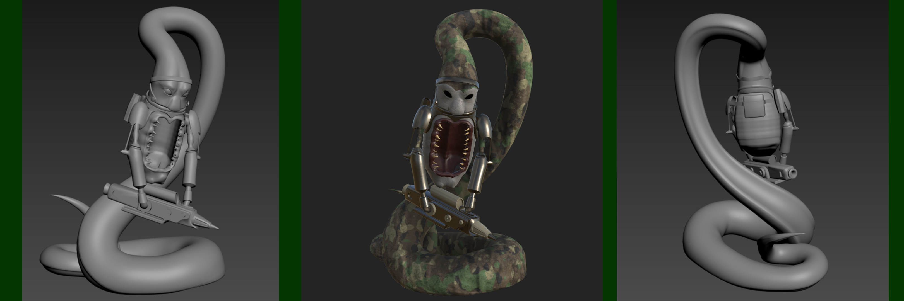
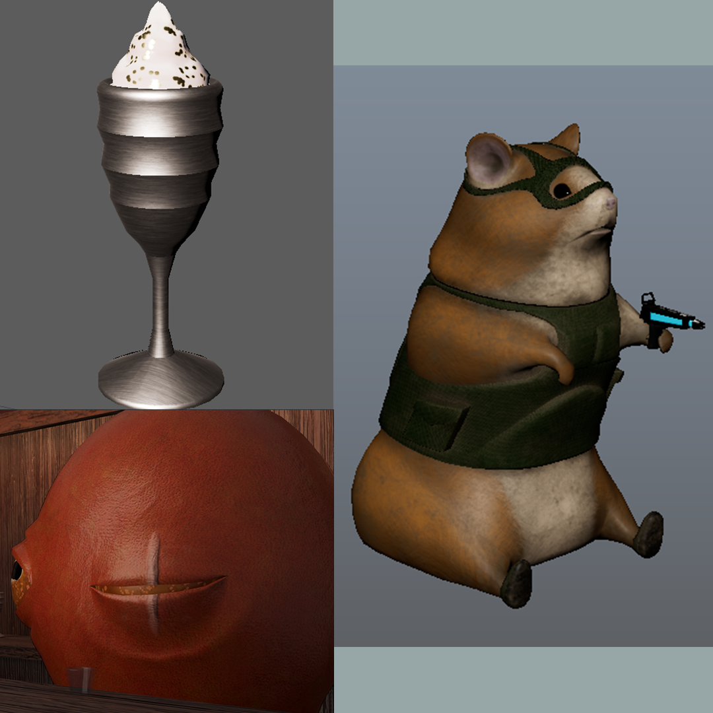
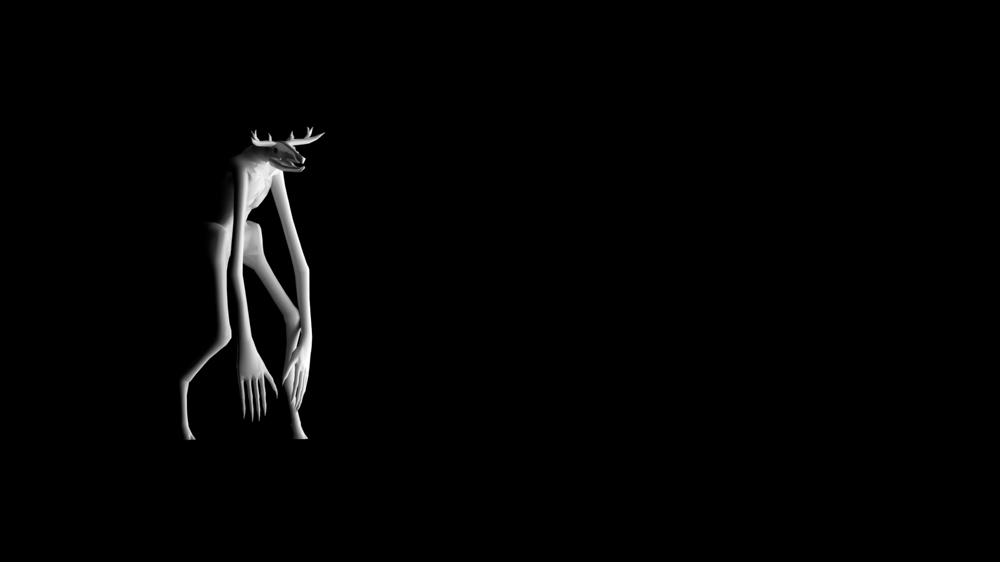

Autumn Ryan | 3D Art
Home ContactPersonal Work
Snake Man
A high-tech soldier of an ophidian race, based on one of my dad's old drawings. Modeled in 3D Studio Max. Concept by Joseph Ryan.

Reginald: Wanted Hamster
A short animation I made in Maya based on a tabletop RPG character named Reginald.

Low-Poly Skinwalker
Modeled in 3D Studio Max.
